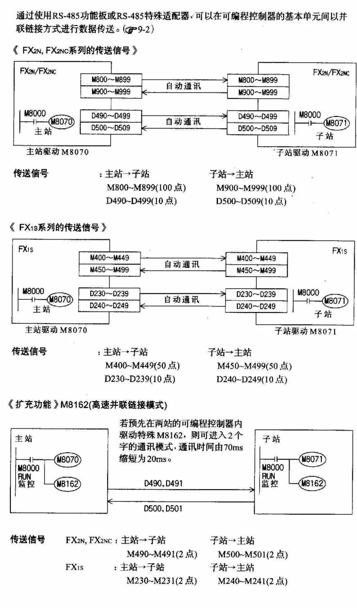
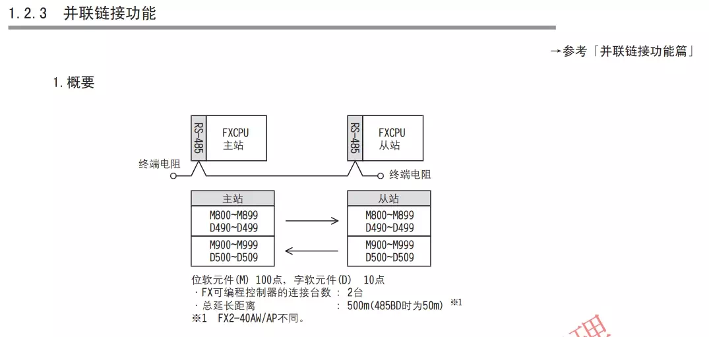
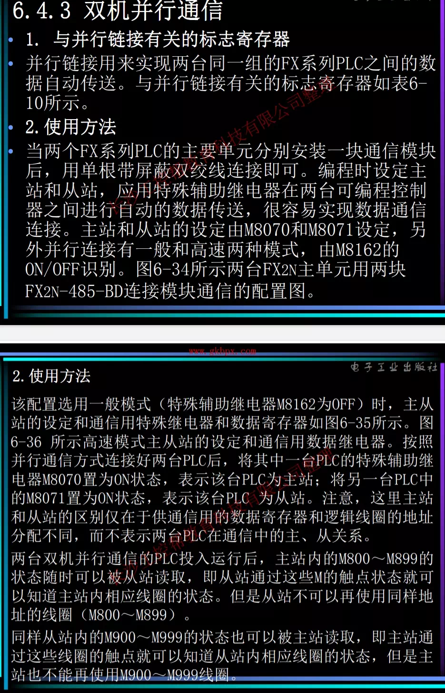
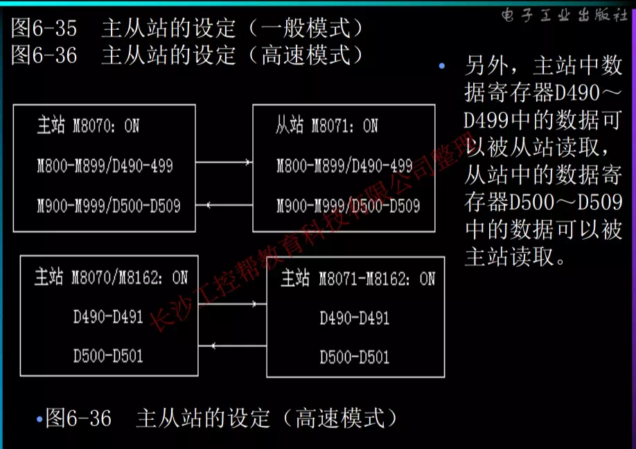
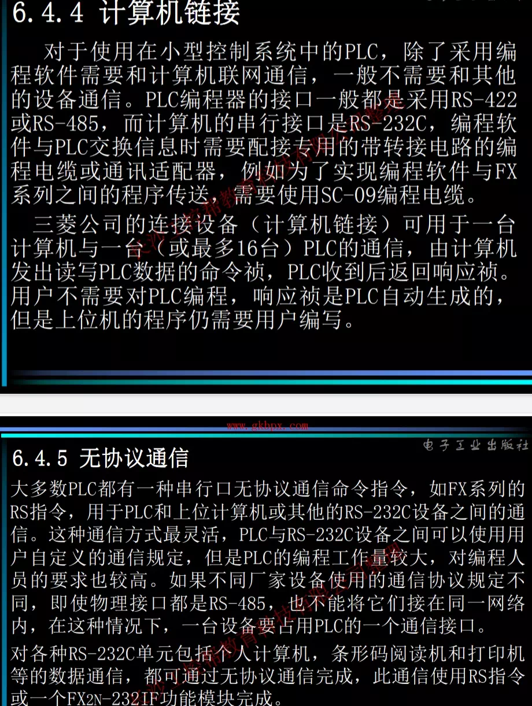

  M8162 并行通讯由于所要求的实时性的不同，可 采用高速模式和低速模式，简单说来就是 要求实时性较高的采用高速模式，高速模 式共享存储单元少，通讯时间短，通讯比 较快；实时性要求不高的可采用低速模 式，低速模式共享存储单元多，通讯时间 会稍微长一点，通讯数据量相对较大，通 讯慢一些。高速模式的设置是在程序中接 通M8162,通常M8162默认为OFF,也就 是不改写M8162默认并行通讯为低速模 式。   计算机链接，无协议通信 